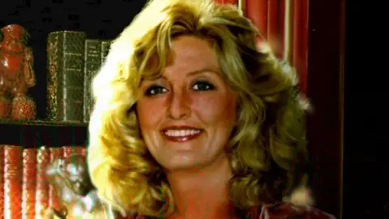
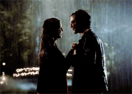
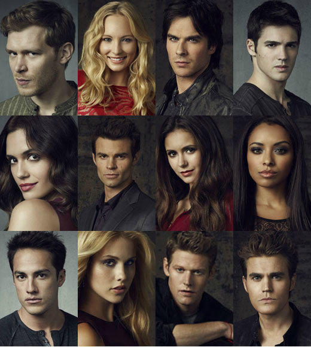
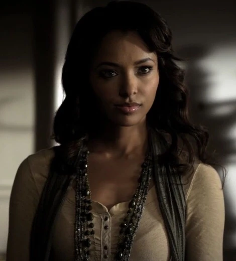
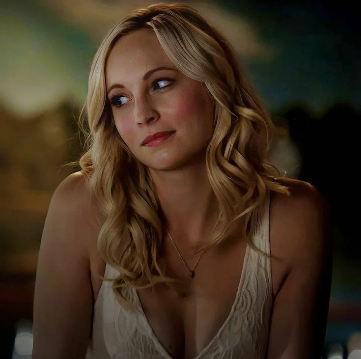
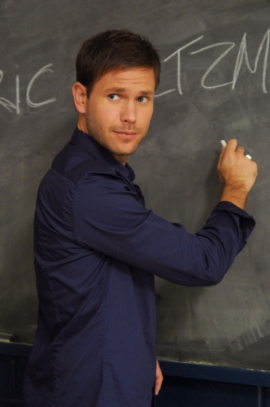

The Vampire Diaries is a supernatural teen drama set in the town of Mystic Falls, where vampires, witches, and werewolves secretly exist. It follows Elena Gilbert, a high school girl who falls for vampire brothers Stefan and Damon Salvatore. As love triangles unfold, dark pasts resurface, and ancient threats emerge, the characters battle personal demons and literal monsters. The show mixes romance, action, and mystery with themes of immortality, redemption, and loyalty across eight seasons.
Are you team Damon? Or are you team Stefan?
🧛♂️ Stefan
😈 Damon
L.J. Smith is an American author best known for writing The Vampire Diaries series, which inspired the hit TV show. Born Lisa Jane Smith, she began writing in the 1980s and gained popularity in the 1990s with supernatural young adult novels. Her books often feature themes of romance, the supernatural, and teen drama, with characters like vampires, witches, and psychics. Besides The Vampire Diaries, she also wrote The Secret Circle, The Forbidden Game, and Dark Visions series. Though she created the original characters, later Vampire Diaries books were ghostwritten after she was removed from the series by the publisher.



Meet the Side Characters
Bonnie Bennett

Witch. Loyal. Powerful.
Caroline Forbes

Vampire. Ambitious. Heartfelt.
Alaric Saltzman

Hunter. Protector. Mentor.
Most Hated TVD Characters + One Word That Describes Why
Matt Donovan — Bland
Elena Gilbert — Selfish
Vicki Donovan — Chaotic
Sybil — Annoying
Katherine Pierce — Manipulative
Tyler Lockwood — Aggressive
Julie Plec (writer/director) — Bias
About the Creator of the Website
Hi! I'm a passionate fan of The Vampire Diaries. I created this website to share my love for the show, its unforgettable characters, and the emotional rollercoaster it takes me on. Whether you're Team Stefan, Team Damon, or just here for the witches and drama, I hope you find something here to enjoy.
This site is my tribute to the series that made me laugh, cry, and obsess over Mystic Falls for years. I hope that anyone exploring my site who hasn't watched the show is now more eager to start binging it. THANK YOU!!!!!!!!